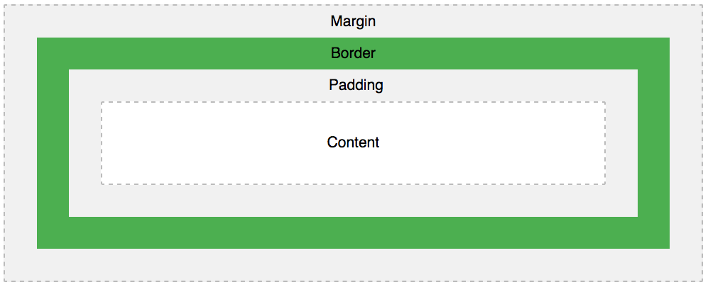

Innan du börjar placera saker på olika platser är det nästa alltid viktigt att sätta en
Guide till det hittar du här.
Margin är det vanligaste sättet att placera saker då det skapar en osynlig barriär mellan sig och annat.
Se boxmodellen nedan:
För att testa på och se hur man flyttar saker med margin klickar ni här. Eller så kollar ni på denna video.
Du kan antingen läsa om det här på W3Schools eller kolla på en genomgång här under.